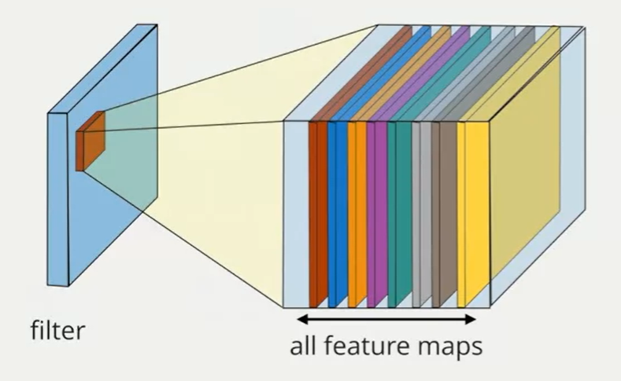
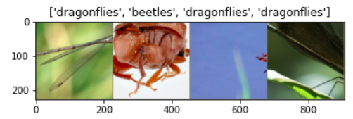
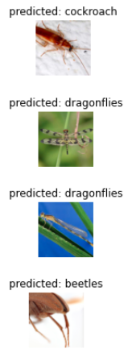

Convolutional neural network
Convolutional neural network takes advantage of convolutional layers which performs well on data that have spatial structure. The basic structure of a ConvNet is that convolutional filters are applied to input images via a convolution operation, and that operation is repeated by all the filters to get a higher representation of an image that can be fed to a classifier.
In a convolutional layer, we convolve the input x with a convolutional kernel, producing output y. $$ y=ReLU(W*x+b) $$
There are four key elements of a convolutional layer:
- Number of filters
- Strides: the step size every time the filter moves
- Filter Size

Classification Model Example
Here we use pytorch to implement a simple convolutional neural network to classify insects images. There are three classes of the target variable: beetles, cockroach and dragonfiles. There are 1019 images in the training dataset and 180 images in the testing dataset. Here are a few training images so as to understand the data augmentation.

We can build our convoluational neural network from scratch, such as random initializations of parameters. Here, we develop a very simple CNN model with 4 convolutional layers (with a pooling layer after 2 convolutional layers) and 1 fully connected layer.
- Basic structure
- 3x3 convolution -> 3x3 convolution -> 2x2 max pool
- 3x3 convolution -> 3x3 convolution -> 2x2 max pool
- fully connected layer: 256 units
- output layer: 3 units (prediction class)
import torch.nn as nn
import torch.nn.functional as F
class INSECT_CNN(nn.Module):
def __init__(self):
super().__init__()
self.conv1 = nn.Conv2d(3, 32, kernel_size=3, padding=1)
self.conv2 = nn.Conv2d(32, 32, kernel_size=3, padding=1)
self.conv3 = nn.Conv2d(32, 64, kernel_size=3, padding=1)
self.conv4 = nn.Conv2d(64, 64, kernel_size=3, padding=1)
self.fc1 = nn.Linear(80*96*64, 256)
self.fc2 = nn.Linear(256, 3)
def forward(self, x):
# conv layer 1
x = self.conv1(x)
x = F.relu(x)
# conv layer 2
x = self.conv2(x)
x = F.relu(x)
x = F.max_pool2d(x, kernel_size=2)
# conv layer 3
x = self.conv3(x)
x = F.relu(x)
# conv layer 4
x = self.conv4(x)
x = F.relu(x)
x = F.max_pool2d(x, kernel_size=2)
# fc layer 1
x = x.view(-1, 80*96*64)
x = self.fc1(x)
x = F.relu(x)
# fc layer 2
x = self.fc2(x)
return x
The prediction accuracy is 87.2% which is fairly satisfying for this simple structure. However, transfer learning is much more popular due to small sample sizes and restrictions on computing ability. Here, we show an example of applying a ConvNet model pretrained by ImageNet as fixed feature extractor to classify our own insects images.
import torchvision
model_conv = torchvision.models.resnet18(pretrained=True)
for param in model_conv.parameters():
param.requires_grad = False #we do not retrain the weights except for the last layer
# Parameters of newly constructed modules have requires_grad=True by default
num_ftrs = model_conv.fc.in_features
model_conv.fc = nn.Linear(num_ftrs, 3) #Here, we have 3 classes
criterion = nn.CrossEntropyLoss()
# Observe that only parameters of final layer are being optimized as
# opposed to before.
optimizer_conv = optim.SGD(model_conv.fc.parameters(), lr=0.001, momentum=0.9)
# Decay LR by a factor of 0.1 every 7 epochs
exp_lr_scheduler = lr_scheduler.StepLR(optimizer_conv, step_size=7, gamma=0.1)
model_conv = train_model(model_conv, criterion, optimizer_conv,
exp_lr_scheduler, num_epochs=25)
The accuracy increases to 97.8% after taking advantaging of a pretrained model. We print some predicted results of this model and all the selected examples are correctly predicted.

References
- https://www.coursera.org/learn/machine-learning-duke/ungradedLab/L9Xof/convolutional-neural-networks
- https://pytorch.org/tutorials/beginner/transfer_learning_tutorial.html
- https://medium.com/secure-and-private-ai-writing-challenge/loading-image-using-pytorch-c2e2dcce6ef2
- https://cs231n.github.io/transfer-learning/